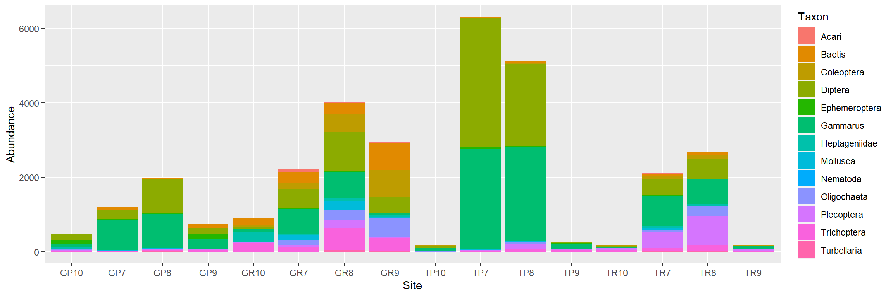
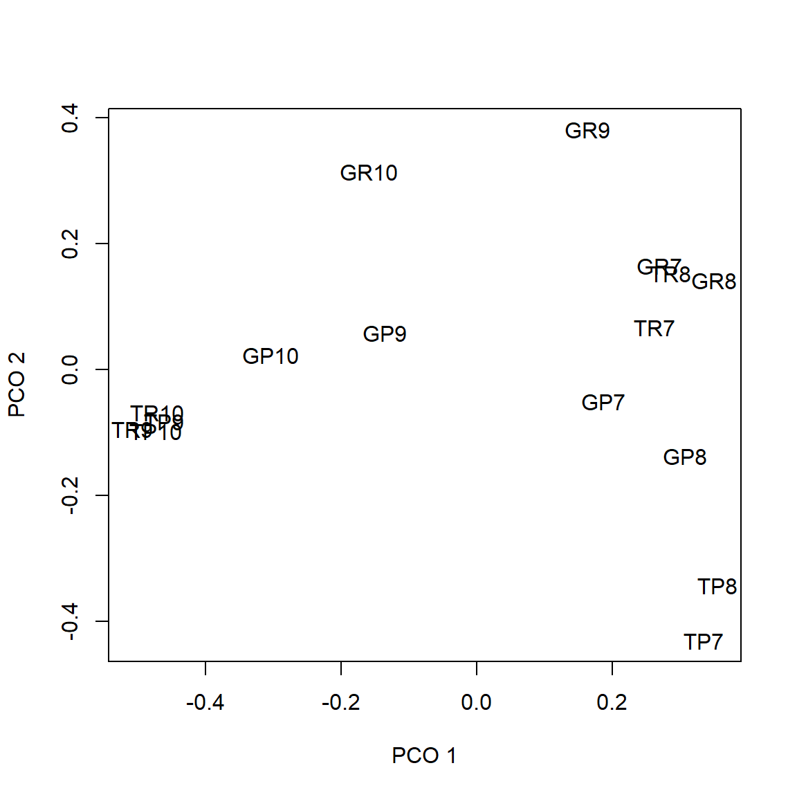
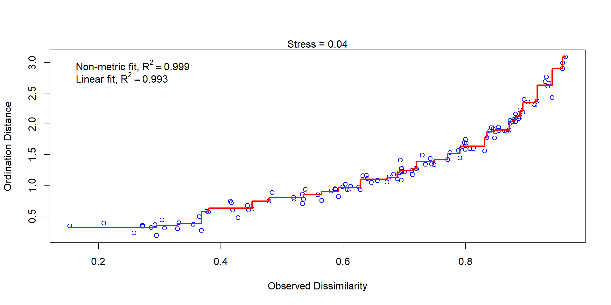
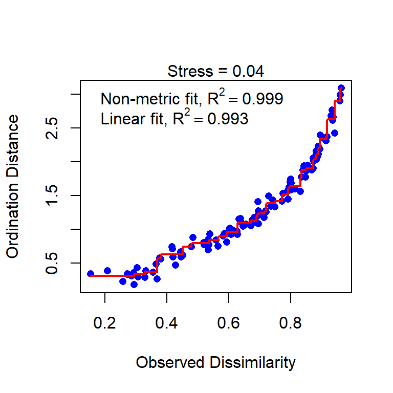
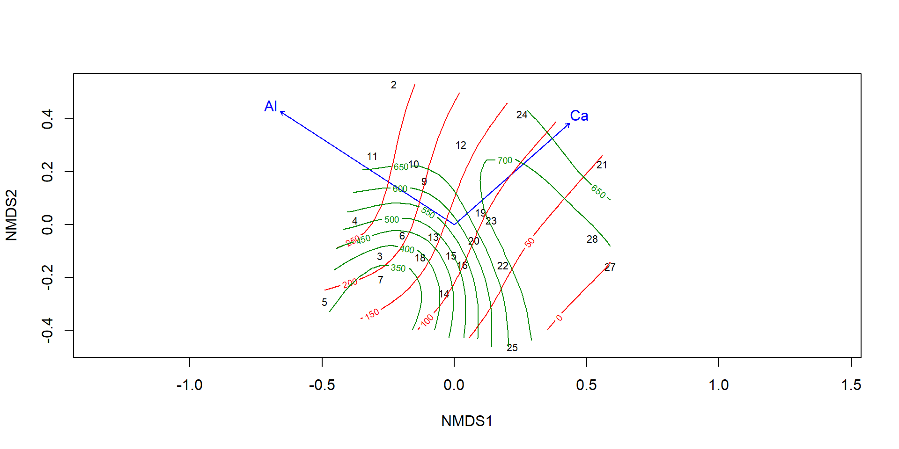
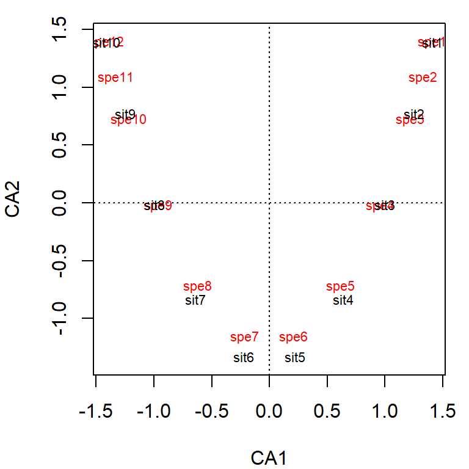
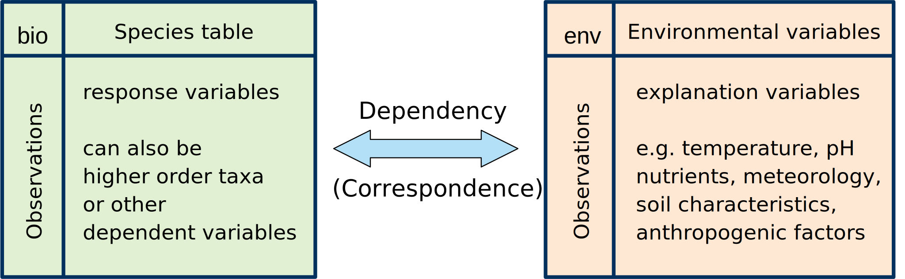
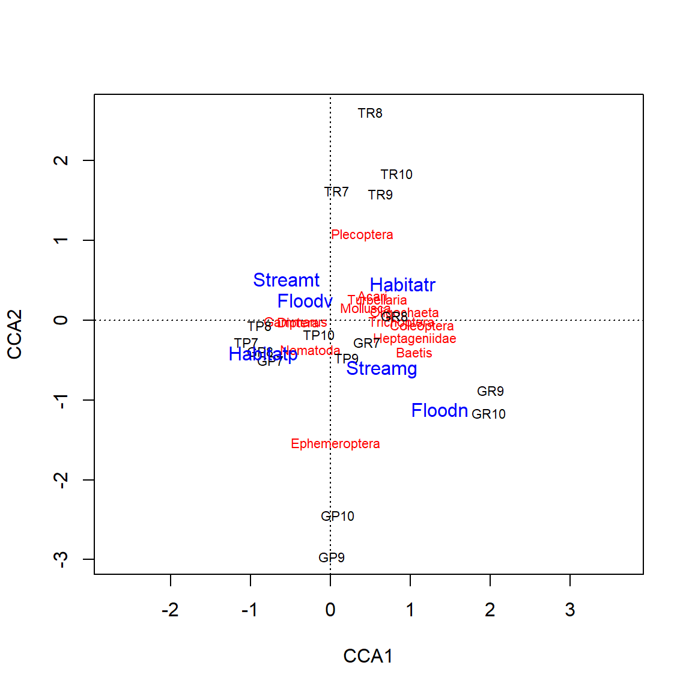
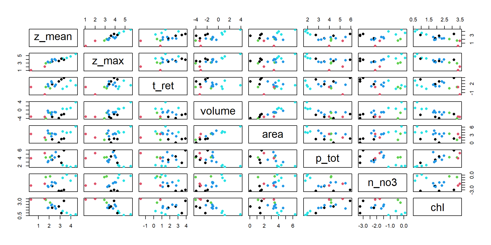

| Site | Mollusca | Diptera | Baetis | Plecoptera | Coleoptera | Turbellaria | Heptageniidae | Ephemeroptera | Gammarus | Trichoptera | Acari | Nematoda | Oligochaeta |
|---|---|---|---|---|---|---|---|---|---|---|---|---|---|
| GP9 | 3 | 165 | 91 | 14 | 6 | 3 | 9 | 136 | 256 | 45 | 6 | 0 | 11 |
| GR9 | 31 | 438 | 728 | 31 | 728 | 11 | 31 | 0 | 65 | 367 | 3 | 0 | 503 |
| TP9 | 0 | 26 | 3 | 20 | 9 | 0 | 3 | 20 | 119 | 40 | 0 | 0 | 23 |
| TR9 | 0 | 11 | 6 | 37 | 11 | 0 | 0 | 3 | 68 | 26 | 0 | 0 | 23 |
| GP8 | 23 | 913 | 31 | 14 | 3 | 9 | 6 | 26 | 901 | 37 | 3 | 20 | 0 |
| GR8 | 225 | 1066 | 310 | 199 | 461 | 48 | 91 | 23 | 688 | 600 | 26 | 0 | 284 |
| TP8 | 17 | 2204 | 54 | 117 | 11 | 0 | 11 | 20 | 2525 | 77 | 3 | 3 | 68 |
| TR8 | 3 | 520 | 74 | 762 | 125 | 20 | 65 | 0 | 668 | 173 | 3 | 0 | 267 |
| GP7 | 26 | 247 | 68 | 6 | 3 | 3 | 3 | 20 | 813 | 9 | 6 | 0 | 0 |
| GR7 | 117 | 509 | 290 | 63 | 191 | 6 | 26 | 11 | 682 | 117 | 60 | 9 | 131 |
| TP7 | 26 | 3477 | 17 | 28 | 0 | 0 | 3 | 37 | 2693 | 17 | 0 | 0 | 0 |
| TR7 | 48 | 429 | 57 | 412 | 97 | 9 | 63 | 9 | 808 | 102 | 26 | 6 | 57 |
| GP10 | 3 | 159 | 14 | 31 | 3 | 0 | 48 | 91 | 100 | 23 | 0 | 0 | 17 |
| GR10 | 0 | 68 | 191 | 26 | 51 | 3 | 253 | 0 | 80 | 233 | 3 | 0 | 11 |
| TP10 | 0 | 51 | 0 | 6 | 9 | 0 | 0 | 6 | 71 | 0 | 0 | 0 | 31 |
| TR10 | 0 | 28 | 6 | 40 | 14 | 0 | 0 | 0 | 40 | 54 | 0 | 0 | 0 |
11-Multivariate methods II
Applied Statistics – A Practical Course
Thomas Petzoldt
2023-11-26
Data sets and terms of use
The “UBA-lakes” data set originates from the public data repository of the German Umweltbundesamt (Umweltbundesamt, 2021). The data set provided can be used freely according to the terms and conditions published at the UBA web site, that refer to § 12a EGovG with respect of the data, and to the Creative Commons CC-BY ND International License 4.0 with respect to other objects directly created by UBA.
The “gauernitz” data set contains simplified teaching versions from research data, of the study from Winkelmann et al. (2011)
The document itself, the codes and the ebedded images are own work and can be shared according to CC BY 4.0.
A Taxonomic Table
- Aggregated part of taxa list from two small streams.
- Mayfly splitted in most dominant taxa (Baetis and Heptageniidae) and the remaining Ephemeroptera for simplicity of the teaching example.
Bar chart
library("ggplot2")
library("tidyr")
benthos <- read.csv("https://raw.githubusercontent.com/tpetzoldt/datasets/main/data/gauernitz.csv")
benthos_long <-
benthos |>
pivot_longer(cols=5:17, names_to="Taxon", values_to = "Abundance")
ggplot(benthos_long, aes(x=Site, y=Abundance, fill=Taxon)) + geom_col()How to analyse this kind of data?
Different approaches
- Direct interpretation
- raw data, mean values, …
- tables and plots
- Calculation of biodiversity indices
- general-purpose indices (Richness, Simpson, Shannon, Eveness)
- domain-specific indices (in stream ecology: sapropbic index, Perlodes, EPT)
- Multivariate statistics
- ordination methods (CCA, NMDS, dbRDA)
- cluster analysis
Diversity indices
Simpson index
\[ D = \sum_{i=1}^S p_i^2 \]
- \(p_i\): relative abundance of species
- in most cases, Simpson index is given as \(\tilde{D} = 1 - D\)
(large values – high diversity) - also possible: inverse Simpson index: \(D' = 1 / D\)
Shannon index
\[ H = -\sum_{i=1}^S p_i \log_b p_i \]
- in most cases log base \(b=e\) (natural log), some prefer \(b=2\) (information theory)
Eveness
\[ E = \frac{H}{\log(S)} \]
- \(S\): number of species
- more indices: species richness, species deficit, Fisher’s \(\alpha\) …
Diversity indices
| Site | Habitat | Stream | Flood | shannon | simpson | invsimpson | eveness | fisher_alpha |
|---|---|---|---|---|---|---|---|---|
| GP9 | p | g | n | 1.75 | 0.78 | 4.55 | 0.68 | 2.03 |
| GR9 | r | g | n | 1.79 | 0.81 | 5.23 | 0.70 | 1.44 |
| TP9 | p | t | n | 1.70 | 0.74 | 3.87 | 0.66 | 1.80 |
| TR9 | r | t | n | 1.74 | 0.78 | 4.57 | 0.68 | 1.70 |
| GP8 | p | g | v | 1.11 | 0.58 | 2.39 | 0.43 | 1.70 |
| GR8 | r | g | v | 2.08 | 0.85 | 6.57 | 0.81 | 1.52 |
| TP8 | p | t | v | 1.04 | 0.57 | 2.32 | 0.41 | 1.47 |
| TR8 | r | t | v | 1.81 | 0.80 | 5.04 | 0.71 | 1.46 |
| GP7 | p | g | v | 1.04 | 0.50 | 1.99 | 0.40 | 1.67 |
| GR7 | r | g | v | 1.97 | 0.82 | 5.45 | 0.77 | 1.83 |
| TP7 | p | t | v | 0.80 | 0.51 | 2.05 | 0.31 | 0.90 |
| TR7 | r | t | v | 1.80 | 0.77 | 4.33 | 0.70 | 1.84 |
| GP10 | p | g | n | 1.83 | 0.80 | 5.00 | 0.71 | 1.78 |
| GR10 | r | g | n | 1.79 | 0.80 | 4.99 | 0.70 | 1.57 |
| TP10 | p | t | n | 1.42 | 0.71 | 3.46 | 0.55 | 1.20 |
| TR10 | r | t | n | 1.62 | 0.78 | 4.64 | 0.63 | 1.19 |
- aggregated data but which of the indices tells what?
- \(\rightarrow\) information loss compared to the original list
Problem
The PCA does not work well for this kind of data
Without standardization: most frequent taxa dominate the analysis, rare species under-represented
With standardization: rare species will given too much influence, result dominates much on sampling error
square root transformation does not help, log-transformation is not possible because of zeros
Why?
- the distance measure, used in PCA is the so-called Euclidean distance
- it works not well for species lists
Approach
\(\rightarrow\) methods that support other distance and dissimilarity measures
Distance and similarity
Euclidean distance
- PCA works with Euclidean distance
- Theorem of Pythagoras
\[ a^2 + b^2 = c^2 \quad \Rightarrow\quad c = \sqrt{a^2 + b^2} = \sqrt{\Delta x^2 + \Delta y^2} \]
\(\rightarrow\) but: Euclidean distance is not always the best option.
Distance and dissimilarity
Axiomatic definition
Measure of distance \(d\) between multidimensional points \(x_i\) and \(x_j\):
- \(d(x_i, x_j) \ge 0\), distances are similar or equal to zero
- \(d(x_i, x_j)=d(x_j,x_i)\), the distance from A to B is the same as from B to A,
- \(d(x_i, x_i)=0\), the distance from a given point to itself is zero
A distance measure is termed metric, if:
- \(d=0\) applies in the case of equality only, and
- the triangle inequality aapplies.
The indirect route is longer than the direct route
If one or both of the additional conditions are violated, we speak about nonmetric measures and use the term dissimilarity instead of distance.
Similarity
A measure of similarity \(s\) can be defined in a similar way:
- \(s(x_i,x_j) \le s_{max}\)
- \(s(x_i,x_j)=s(x_j,x_i)\)
- \(s(x_i,x_i)=s_{max}\)
it is metric, if:
- \(s_{max}\) applies only in the case of equality and
- the triangle inequality applies
Conversion between dissimilarity and similarity
| similarity | dissimilarity |
|---|---|
| \(s=1-d/d_{max}\) | \(d=1-s/s_{max}\) |
| \(s=\exp(-d)\) | \(d= - \ln(s-s_{min})\) |
- distance goes from \(0\) to \(\infty\)
- different transformations, as long as the \(\Rightarrow\) transformation is monotonic
- in most cases similarity \(s\) is limited between \((0, 1)\) or between 0 and 100%.
Common distance and dissimilarity measures
- Euclidean distance: shortest connection between 2 points in space
- Manhattan distance: around the corner, as in Manhattans grid-like streets
- Chi-square distance: for comparison of frequencies
- Mahalanobis distance: takes covariance into account
- Bray-Curtis dissimilarity: comparison of species lists in ecology
- Jaccard index: for binary (presence-absence) data
- Gower dissimilarity: used for mixed-type variables
Distance and dissimilarity of metric variables
with \(x_{ij}, x_{ik}\) abundance of species \(i\) at sites (\(j, k\)).
Euclidean distance:
\[ d_{jk} = \sqrt{\sum (x_{ij}-x_{ik})^2} \]
Manhattan distance: \[ d_{jk} = \sum |x_{ij}-x_{ik}| \]
Gower distance: \[ d_{jk} = \frac{1}{M} \sum\frac{|x_{ij}-x_{ik}|}{\max(x_i)-\min(x_i)} \]
Bray-Curtis dissimilarity: \[ d_{jk} = \frac{\sum{|x_{ij}-x_{ik}|}}{\sum{(x_{ij}+x_{ik})}} \]
Distance and dissimilarity of binary variables
- Euclidean: \(\sqrt{A+B-2J}\)
- Manhattan: \(A+B-2J\)
- Gower: \(\frac{A+B-2J}{M}\)
- Bray-Curtis: \(\frac{A+B-2J}{A+B}\)
- Jaccard: \(\frac{2b}{1+b}\) with \(b\) = Bray-Curtis dissimilarity
where:
- \(A, B\) = numbers of species on compared sites
- \(J\) = (joint) is the number of species that occur on both compared sites
- \(M\) = number of columns (excluding missing values)
Applications
Additional distance measures and application suggestions in the vegdist help page.
Which distances are supported by different methods?
| Matrices | Distance | R function | ||
|---|---|---|---|---|
| PCA | Principal Components Analysis | one matrix | euclidean | prcomp, rda |
| RDA | Redundancy Analysis | two matices | euclidean | rda |
| CA | Correspondence Analysis | one matrix | chi square | cca |
| CCA | Canonical Correspondence Analysis | two matrices | chi square | cca |
| PCO/MDS | Principal Correspondence Analysis | one matrix | any | cmdscale, … |
| dbRDA | distance-based Redundancy Analysis | two matrices | any | dbrda, capscale |
| PCoA | Principal Coordinate Analysis | two matrices | any | wcmdscale |
| NMDS | Non-metric Multidimensional Scaling | one matrix | any | metaMDS |
| … | … | … | … | … |
| Cluster analysis | one matrix | any | several packages | |
- many different methods, not all are shown
- one matrix methods: all variables depend on each other; optional matrix of explanation variables can be projected afterwards
- two matrix methods (= constrained methods): additional matrix of explanation variables, both matrices handled simultanaeously
- an additional third matrix is supported by so-called partial methods, e.g. pRDA, pCCA, pdbRDA
Principal coordinate analysis (PCO)
\(\rightarrow\) distance matrix (d) used as input
and not data matrix (species) directly

- works with arbitrary distance measures, e.g. Bray-Curtis dissimilarity
- supported by different packages, e.g. stats, vegan, labdsv, ecodist, ade4 and ape
- basic version in package stats (base R), other ith packages more specialized versions
- basic version has no biplot, can be added done separately
Single matrix methods I
PCA: Principal Components analysis
▶ input: raw data, covariance or correlation matrix
(+) basic method, very easy to understand
(+) biplot: common representation of objects and variables
(–) only Euclidean distance, not suitable for taxa lists
CA: Correspondence analysis
▶ input: raw data (frequencies)
(+) similar to PCA, but uses \(\chi^2\) distance
(+) better for taxa lists
PCO: Principal Coordinates Analysis (metric MDS)
▶ input: distance matrix
(+) any distance measure can be used
Single matrix methods II: NMDS
- non-metric multidimensional scaling
- is an extension of the PCO (=MDS)
- \(\rightarrow\) attempts to bring similarity structure better into 2 (or 3) dimensions
- iterative procedure, minimize goodness of fit (called “stress”)
- several variants, mostly algorithm according to Kruskal
▶ input: random configuration or PCO
(+) popular, relatively easy to interpret
(+/-) geometric distortion
(–) results not always identical
(–) computer intensive, especially for large data sets
Note:
- stress is sometimes given as ratio 0…1, sometimes in 0…100%
- differences between packages and statistics programs, e.g. SPSS
Example
benthos <- read.csv("../data/gauernitz.csv")
row.names(benthos) <- benthos$Site
env <- benthos[c("Habitat", "Stream", "Flood")] # required later
bio <- benthos[c("Mollusca", "Diptera", "Baetis", "Plecoptera", "Coleoptera",
"Turbellaria", "Heptageniidae", "Ephemeroptera", "Gammarus",
"Trichoptera", "Acari", "Nematoda", "Oligochaeta")]
ord <- metaMDS(bio)Square root transformation
Wisconsin double standardization
Run 0 stress 0.1102424
Run 1 stress 0.1102424
... Procrustes: rmse 3.033608e-06 max resid 8.041263e-06
... Similar to previous best
Run 2 stress 0.1102424
... Procrustes: rmse 2.731187e-06 max resid 5.963586e-06
... Similar to previous best
Run 3 stress 0.1105543
... Procrustes: rmse 0.02421199 max resid 0.07189891
Run 4 stress 0.1105543
... Procrustes: rmse 0.02425635 max resid 0.07204862
Run 5 stress 0.1105543
... Procrustes: rmse 0.02429687 max resid 0.07218637
Run 6 stress 0.1727865
Run 7 stress 0.1105543
... Procrustes: rmse 0.02420773 max resid 0.07188688
Run 8 stress 0.2433619
Run 9 stress 0.1105543
... Procrustes: rmse 0.02415121 max resid 0.07170118
Run 10 stress 0.1102424
... Procrustes: rmse 1.50777e-05 max resid 3.339566e-05
... Similar to previous best
Run 11 stress 0.1102424
... Procrustes: rmse 1.78221e-05 max resid 5.068668e-05
... Similar to previous best
Run 12 stress 0.1736879
Run 13 stress 0.2345638
Run 14 stress 0.1105543
... Procrustes: rmse 0.02421068 max resid 0.07189717
Run 15 stress 0.1105543
... Procrustes: rmse 0.02426446 max resid 0.0720779
Run 16 stress 0.1102424
... New best solution
... Procrustes: rmse 1.523443e-06 max resid 3.697954e-06
... Similar to previous best
Run 17 stress 0.1102424
... Procrustes: rmse 5.719866e-06 max resid 1.470382e-05
... Similar to previous best
Run 18 stress 0.1102424
... Procrustes: rmse 4.896772e-06 max resid 1.392345e-05
... Similar to previous best
Run 19 stress 0.2247335
Run 20 stress 0.2403446
*** Best solution repeated 3 timesResults of the NMDS
Call:
metaMDS(comm = bio)
global Multidimensional Scaling using monoMDS
Data: wisconsin(sqrt(bio))
Distance: bray
Dimensions: 2
Stress: 0.1102424
Stress type 1, weak ties
Best solution was repeated 3 times in 20 tries
The best solution was from try 16 (random start)
Scaling: centring, PC rotation, halfchange scaling
Species: expanded scores based on 'wisconsin(sqrt(bio))' metaMDSruns a series of NMDS trials and outputs the best- makes automatic decisions about transformation, distance and scaling
Recommendation
- specify distance, scaling and transformation explicitly
- consider to increase
tryandtrymaxfor big and/or difficult data sets, e.g.:
NMDS Plot

Stress
Compares similarity of the ordination with original dissimilarity in all dimensions.
- \(\theta(d_{ij})\): observed dissimilarity
- \(\tilde{d}|{ij}\): ordination dissimilarity
\[ S = \sqrt{\frac{\sum_{i \ne j} (\theta(d_{ij}) - \tilde{d}_{ij})^2}{\sum_{i \ne j} \tilde{d}_{ij}^2}} \]
| Quality of ordination | Stress |
|---|---|
| poor | > 0.2 |
| sufficient | < 0.1 |
| good | <0.05 |
| excellent | <0.025 |
| perfect | 0.0 |
Stressplot (Shepherd plot)
Stressplot: a good and a poor example
Good

Poor

- Points should be close to the red line.
- Pattern of stairs not important (at least not for now)
- The \(R^2\) values are always big, ignore or at least don’t overinterpret it.
Environmental fitting
- Plots arrows if explanation variables are metric.
- Shows only centroids for ordinal explanation variables.
Numerical results and p-values
***FACTORS:
Centroids:
NMDS1 NMDS2
Habitatp -0.2714 0.0874
Habitatr 0.2714 -0.0874
Streamg -0.0062 -0.1955
Streamt 0.0062 0.1955
Floodn 0.1665 0.1540
Floodv -0.1665 -0.1540
Goodness of fit:
r2 Pr(>r)
Habitat 0.3837 0.000999 ***
Stream 0.1807 0.062937 .
Flood 0.2428 0.018981 *
---
Signif. codes: 0 '***' 0.001 '**' 0.01 '*' 0.05 '.' 0.1 ' ' 1
Permutation: free
Number of permutations: 1000- p-values are based on a permutation test
- useful, but the ADONIS test is better
Another example data set from the vegan package

Data from Väre et al. (1995)
The data set
varespec: 24 observations of 44 variables (plant species)
[1] "Callvulg" "Empenigr" "Rhodtome" "Vaccmyrt" "Vaccviti" "Pinusylv"
[7] "Descflex" "Betupube" "Vacculig" "Diphcomp" "Dicrsp" "Dicrfusc"
[13] "Dicrpoly" "Hylosple" "Pleuschr" "Polypili" "Polyjuni" "Polycomm"
[19] "Pohlnuta" "Ptilcili" "Barbhatc" "Cladarbu" "Cladrang" "Cladstel"
[25] "Cladunci" "Cladcocc" "Cladcorn" "Cladgrac" "Cladfimb" "Cladcris"
[31] "Cladchlo" "Cladbotr" "Cladamau" "Cladsp" "Cetreric" "Cetrisla"
[37] "Flavniva" "Nepharct" "Stersp" "Peltapht" "Icmaeric" "Cladcerv"
[43] "Claddefo" "Cladphyl"varechem: 24 observations of 16 variables
[1] "N" "P" "K" "Ca" "Mg" "S"
[7] "Al" "Fe" "Mn" "Zn" "Mo" "Baresoil"
[13] "Humdepth" "pH" Data from Väre et al. (1995) about influence of reindeer grazin gon understorey vegetation in Pinus sylvestris forests in eastern Fennoscandia.
Surface fitting
Pros and cons of the methods discussed so far
PCA, CCA
(+) easy to understand, quick and reproducible
(+) no non-linear distortion
(–) but: horseshoe effect possible
(–) information is often still in a “higher dimension”
(–) Euclidean distance poorly suited for species lists
NMDS
(+) any distance measure can be used
(+) better mapping on low dimensions
(–) bias
(–) numerical effort, iterative method, local minima
(–) one-matrix method (no separate matrices for species and environmental factors)
Interpretation of the CA
- biplot with species and environmental factors, note different scaling!
- distance from the origin: \(\chi^2\)
- species in the middle: either “average species” or poorly explained species.
- species at the very edge: Attention, often rare species
- orthogonal angle of species on connecting line origin - centroid of environmental factor
Problems of CA (and PCA)
- arc (CA) or horseshoe effect (PCA)
| 1 | 1 | 1 | 0 | 0 | 0 | 0 | 0 | 0 | 0 | 0 | 0 |
| 0 | 1 | 1 | 1 | 0 | 0 | 0 | 0 | 0 | 0 | 0 | 0 |
| 0 | 0 | 1 | 1 | 1 | 0 | 0 | 0 | 0 | 0 | 0 | 0 |
| 0 | 0 | 0 | 1 | 1 | 1 | 0 | 0 | 0 | 0 | 0 | 0 |
| 0 | 0 | 0 | 0 | 1 | 1 | 1 | 0 | 0 | 0 | 0 | 0 |
| 0 | 0 | 0 | 0 | 0 | 1 | 1 | 1 | 0 | 0 | 0 | 0 |
| 0 | 0 | 0 | 0 | 0 | 0 | 1 | 1 | 1 | 0 | 0 | 0 |
| 0 | 0 | 0 | 0 | 0 | 0 | 0 | 1 | 1 | 1 | 0 | 0 |
| 0 | 0 | 0 | 0 | 0 | 0 | 0 | 0 | 1 | 1 | 1 | 0 |
| 0 | 0 | 0 | 0 | 0 | 0 | 0 | 0 | 0 | 1 | 1 | 1 |

Workaround
- detrended correspondence analysis (DCA) used in the past, not anymore recommended (except you know what you do)
- better: NMDS or a “constrained” (2-matrix) method, e.g. CCA, RDA, dbRDA)
Two matrix methods
taxa matrix (bio): dependend variables, in ecology typically species
environmental matrix (env): explanation variables, also called constraints
Single matrix methods: ordination of species table alone, environmental variables considered afterwards
Two matrix methods: Species table and environmental variables treated simultanaeously
Many to many relationship
\[\mathbf{Y} = f(\mathbf{X})\]
CCA: Canonical Correspondence Analysis
Example Gauernitzbach-data
Call: cca(formula = bio ~ Habitat + Stream + Flood, data = env)
Inertia Proportion Rank
Total 0.8599 1.0000
Constrained 0.5210 0.6059 3
Unconstrained 0.3389 0.3941 12
Inertia is scaled Chi-square
Eigenvalues for constrained axes:
CCA1 CCA2 CCA3
0.3821 0.1090 0.0299
Eigenvalues for unconstrained axes:
CA1 CA2 CA3 CA4 CA5 CA6 CA7 CA8 CA9 CA10
0.13511 0.09923 0.03695 0.02930 0.01771 0.01124 0.00504 0.00213 0.00157 0.00050
CA11 CA12
0.00011 0.00000 - inertia measures error and information (similar to variance)
- allows separation of variability into information and error
- in case of CCA it is \(\chi^2\) distance, in case of RDA it is variance
- in the example
- 61% is explained by the constrained axes Habitat, Stream and Flood
- 39% is not explained by the provided environmental variables
Triplot
Important
- The plot shows only the part of variation that is explained by the constraints.
- It the number of constraints is high compared to the number of observations, the ordination shows again the full variation, i.e. becomes unconstrained.
Statistical significance: ANOVA like permutation test
Permutation test for cca under reduced model
Terms added sequentially (first to last)
Permutation: free
Number of permutations: 999
Model: cca(formula = bio ~ Habitat + Stream + Flood, data = env)
Df ChiSquare F Pr(>F)
Habitat 1 0.31255 11.0671 0.001 ***
Stream 1 0.10766 3.8123 0.006 **
Flood 1 0.10081 3.5696 0.011 *
Residual 12 0.33889
---
Signif. codes: 0 '***' 0.001 '**' 0.01 '*' 0.05 '.' 0.1 ' ' 1anova(ord, by="axis")tests significance of the CCA axes andanova(ord, by="margin")the marginal effects of the terms.- can also be called via
permutest
ADONIS test
Permutation test for adonis under reduced model
Terms added sequentially (first to last)
Permutation: free
Number of permutations: 999
adonis2(formula = bio ~ Habitat * Stream * Flood, data = env, method = "bray")
Df SumOfSqs R2 F Pr(>F)
Habitat 1 0.4465 0.12068 7.4916 0.003 **
Stream 1 0.4388 0.11863 7.3637 0.002 **
Flood 1 1.4603 0.39474 24.5039 0.001 ***
Habitat:Stream 1 0.2827 0.07642 4.7439 0.015 *
Habitat:Flood 1 0.1549 0.04187 2.5989 0.064 .
Stream:Flood 1 0.3001 0.08113 5.0363 0.004 **
Habitat:Stream:Flood 1 0.1393 0.03765 2.3371 0.078 .
Residual 8 0.4768 0.12888
Total 15 3.6994 1.00000
---
Signif. codes: 0 '***' 0.001 '**' 0.01 '*' 0.05 '.' 0.1 ' ' 1- Analysis of variance using distance matrices, uses a permutation test with pseudo-F ratios.
- Not directly related to CCA, RDA etc.
- Can use all dissimilarity measures from the
vegdistfunction. - More powerful that the permutest-ANOVA, as it can handle interaction effects.
RDA and dbRDA
RDA: redundancy analysis
- is the two-matrix extension of the PCA
- uses Euclidean distance for the dependent variables
- very useful, if the dependent matrix (“bio”) contains physical and chemical variables, e.g. temperature, nutrients, or aggregated biological data like total biomass or chlorophyll and not abundances of different species
dbRDA distance-based RDA / constrained PCoA (Principal Coordinates Analysis)
- extends RDA to use arbitrary distance measures like Bray-Curtis for the dependent matrix (bio)
- sometimes more difficult to apply than CCA and RDA because of negative eigenvalues
- very useful for taxa lists, more flexible than CCA
- works in principle also with Euclidean distance, but is less efficient
Example dbRDA with the Gauernitz data
~ .is an abbreviation for all variables in env- also possible
dbrda(bio ~ Stream + Flood + Habitat, data=env) - similar interpretation like CCA
- RDA with Euclidean distance can, for example, be applied to the UBA-Lakes dada set
Partial Analyses: pRDA, pCCA, p-dbRDA
- split constraints into covariates and
- can be used to remove the effect of covariates (e.g. conditioning, background or random variables)
Example
We know that pools and riffles are different and that the two streams differ somewhat, so we handle this as covariates
Call: cca(formula = bio ~ Flood + Condition(Habitat, Stream), data =
env)
Inertia Proportion Rank
Total 0.8599 1.0000
Conditional 0.3125 0.3635 1
Constrained 0.1429 0.1662 1
Unconstrained 0.4045 0.4704 12
Inertia is scaled Chi-square
Eigenvalues for constrained axes:
CCA1
0.1429
Eigenvalues for unconstrained axes:
CA1 CA2 CA3 CA4 CA5 CA6 CA7 CA8 CA9 CA10
0.14749 0.10947 0.07021 0.03126 0.01823 0.01502 0.00512 0.00476 0.00207 0.00064
CA11 CA12
0.00014 0.00007 So the inertia is splitted in three components, Conditional (the covariates), Constrained (flood) and Unconstrained.
The plot shows then the effect of the flood more clearly.
Which ordination method to start with?
Multivariate statistics is a very broad field. Experience shows that it can become quite complex and challenging, but also that it is relatively easy to start with it.
My personal recommendation
- Start with PCA if working with physical, chemical and hydromorphological data. It often also works well with aggregated biomass data.
- Use RDA if you have additional explanation variables (two-matrix method)
- Start with NMDS if working with abundance data of species (taxa lists)
- Use NMDS with
envfitto explore influence of explanation variables on the ordination. - use CCA, dbRDA or PCoA to get more quantitative results, compared to NMDS.
Cluster Analysis
Overview
Cluster analysis aims to group data sets in clusters
Hierarchical clustering
- build a dendrogram (a tree of grouping)
- agglomerative methods
- divisive methods
Different agglomeration methods
- define how distance is measured between clusters
Nonhierarchical clustering
- subdivide in a given number of groups
- usually no dendrogram
- iterative methods
- e.g. k-means, k-centroids
The UBA lake data set again
| z_mean | z_max | t_ret | volume | area | p_tot | n_no3 | chl | |
|---|---|---|---|---|---|---|---|---|
| Ammer | 37.60 | 81.1 | 2.70 | 1.75000 | 46.600 | 7.3 | 1.09 | 2.80 |
| Arend | 28.60 | 48.7 | 50.00 | 0.14700 | 5.140 | 375.0 | 0.05 | 22.30 |
| Boden | 85.00 | 254.0 | 4.20 | 48.52150 | 571.500 | 6.9 | 0.84 | 2.10 |
| Chiem | 25.60 | 73.4 | 1.26 | 2.04800 | 79.900 | 9.2 | 0.55 | 3.80 |
| Dober | 5.40 | 18.8 | 2.30 | 0.01690 | 3.120 | 63.9 | 0.64 | 27.30 |
| Muegg | 4.85 | 7.5 | 0.20 | 0.03500 | 7.200 | 189.9 | 0.17 | 32.90 |
| Ploen | 12.40 | 58.0 | 3.10 | 0.37200 | 29.970 | 62.3 | 0.22 | 8.80 |
| Kumme | 8.10 | 23.3 | 1.50 | 0.26300 | 32.500 | 65.3 | 0.78 | 16.60 |
| Mueritz | 6.50 | 28.1 | 6.00 | 0.68000 | 105.300 | 19.7 | 0.11 | 6.30 |
| MuerB | 9.80 | 30.3 | 6.00 | 0.03800 | 3.910 | 34.2 | 0.11 | 6.70 |
| Plaue | 6.80 | 25.5 | 3.00 | 0.30000 | 38.400 | 26.0 | 0.09 | 6.80 |
| Sacro | 18.01 | 36.0 | 15.00 | 0.01930 | 1.072 | 79.8 | 0.04 | 8.60 |
| Schar | 9.00 | 29.5 | 16.00 | 0.10823 | 12.090 | 35.3 | 0.12 | 10.40 |
| SchwA | 9.40 | 52.4 | 10.00 | 0.33100 | 35.200 | 100.0 | 0.23 | 11.70 |
| SchwI | 13.50 | 44.6 | 5.30 | 0.35600 | 26.400 | 246.5 | 0.19 | 5.86 |
| Starn | 53.20 | 127.8 | 21.00 | 2.99900 | 56.400 | 5.9 | 0.32 | 1.84 |
| Stech | 22.80 | 68.0 | 32.00 | 0.09700 | 4.250 | 15.8 | 0.04 | 2.60 |
| Stein | 1.35 | 2.9 | 2.30 | 0.04200 | 29.100 | 53.3 | 0.12 | 29.00 |
Cluster analysis

Identification of clusters in the tree
Color NMDS according to clusters
Non-hierarchical clustering
Instead of hierarchical clustering, we can also use a non-hierarchical method, e.g. k-means clustering. This is an iterative method, and avoids the problem that cluster assignment depends on the order of clustering and the agglomeration method.
Depending on the question, it may be a disadvantage, that the number of clusters needs to be specified beforehand (e.g. from hierarchical clustering) and that we do not get a tree diagramm.
Scatterplot of data and clusters
Further reading
References
Borcard, D., Gillet, F., & Legendre, P. (2018). Numerical ecology with R. Springer International Publishing. https://doi.org/10.1007/978-3-319-71404-2
Oksanen, J. (2010). Multivariate analysis of ecological communities in R: Vegan tutorial.
Umweltbundesamt. (2021). Kenndaten ausgewählter Seen Deutschlands. https://www.umweltbundesamt.de/daten/wasser/zustand-der-seen#okologischer-zustand-der-seen
Väre, H., Ohtonen, R., & Oksanen, J. (1995). Effects of reindeer grazing on understorey vegetation in dry Pinus sylvestris forests. Journal of Vegetation Science, 6(4), 523–530. https://doi.org/10.2307/3236351
Winkelmann, C., Hellmann, C., Worischka, S., Petzoldt, T., & Benndorf, J. (2011). Fish predation affects the structure of a benthic community. Freshwater Biology, 56(6), 1030–1046. https://doi.org/10.1111/j.1365-2427.2010.02543.x